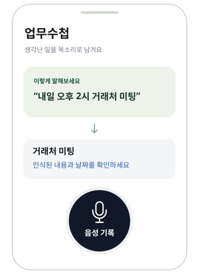

생각났을 때, 바로 기록
이동 중에 떠오른 일이나 통화 후 남은 약속. 음성 기록으로 남기고 업무 내용을 확인하세요.
“내일 거래처에 견적서 보내기”
마이크를 누르고 말하면 업무 기록으로.
오늘 할 일은 업무수첩에서 확인하세요.
통화 후 남은 약속도, 문득 생각난 할 일도.
길게 타이핑하지 않고 목소리로 남기는 나의 업무수첩입니다.

이동 중에 떠오른 일이나 통화 후 남은 약속. 음성 기록으로 남기고 업무 내용을 확인하세요.
“내일 거래처에 견적서 보내기”
카톡 캡처나 사진을 가져와 읽어낸 내용을 확인하고 업무로 등록하세요. 날짜가 불확실하면 내용을 먼저 남길 수 있습니다.
사진 가져오기 → 내용 확인 → 등록
등록한 업무와 일정을 확인하고 필요한 알림을 설정하세요. Google 계정을 연결하면 선택한 일정을 캘린더로 보낼 수 있습니다.
오늘의 일정부터 다음 할 일까지
내용과 날짜를 확인해 저장하고,
오늘의 일정에서 필요한 일을 찾아보세요.
실제 앱 UI를 웹에 렌더링한 소개용 화면입니다.
개인정보를 포함하지 않은 예시 데이터를 사용했습니다.
태장 업무수첩은 현재 Android 비공개 테스트 중입니다.
사용하며 느낀 불편함과 필요한 기능을 들려주세요.